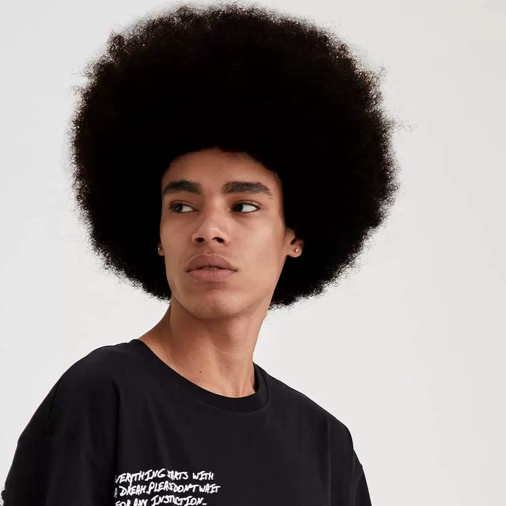
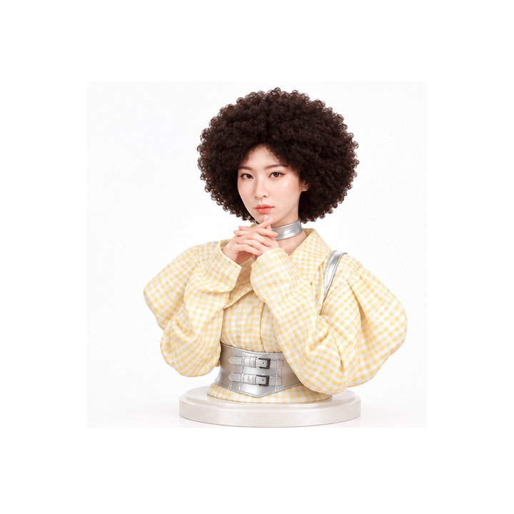

過去
- 存圖片
- 找髮廊
- 傳給設計師
- 問適不適合
- 預約
上傳自己的照片 ＋ 想要的髮型
左邊是本人，右邊是在社群存下的 bombhair。下一張就是把這頂頭髮換到她頭上的 2D Preview。

2D Preview

拖曳旋轉 · ← →
我要這個髮型
可以做這個髮型的設計師
適合想把直髮或馬尾改成量感捲度的客人。店內諮詢可再調 Layer 與瀏海厚度。
生成 3D 人像模型
3D 是諮詢工具，不是產品的成功定義。先讓客人決定「我要這個」，模型用來把後面與層次講清楚。
正在載入 3D 人像…
場景一 · 預約前
過去
現在
場景二 · 店內諮詢
過去
「妳的臉型跟她不太一樣。」
「妳頭髮長度不夠。」
「可能效果沒辦法完全一樣。」
現在
店裡拿 iPad
然後設計師可以直接說：做到這個長度大概會像這樣；後面再加 Layer；瀏海不要這麼厚。